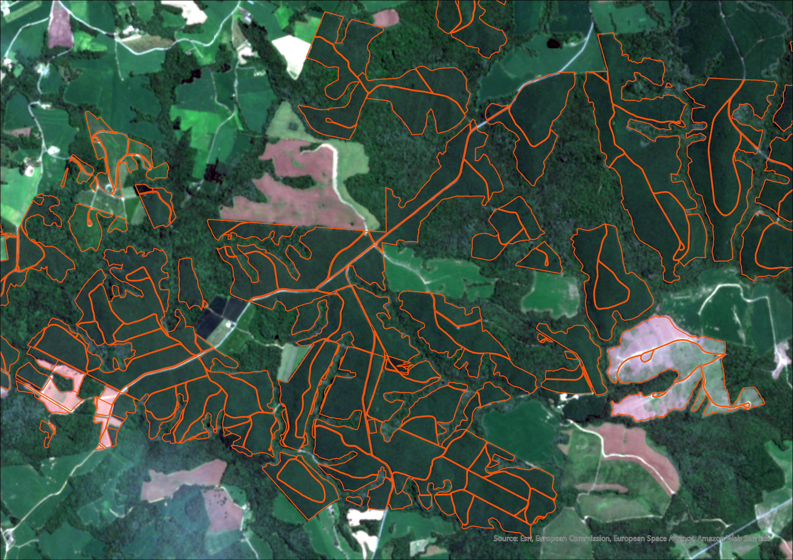
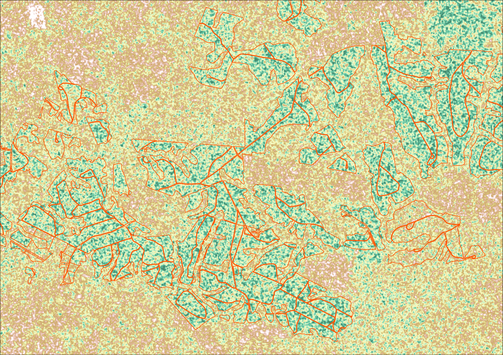

Análise de Dados SAR e Óptico
Comparativo entre imagens Sentinel-2 (Óptico) e Sentinel-1 (Radar de Abertura Sintética). O uso de SAR permite a observação da superfície terrestre independente da cobertura de nuvens, sendo muito útil para monitoramentos periódicos.


Para o monitoramento periódico da colheita florestal de Pinus, utilizamos frequentemente o Sentinel-2, que conta com resolução temporal de 5 dias. No entanto, justamente quando há necessidade de análise, às vezes, vem a surpresa: um imagem totalmente encoberta por um mar de nuvens, ou, com nuvens exatamente na área de operação. Por bastante tempo quebrei a cabeça, fiz testes com dados SAR, mas os primeiros resultados eram pouco satisfatórios: muito ruído e imagens que não me diziam nada. Por um tempo, deixei isso de lado, pensei em alternativas, contei com a equipe da fazenda para validar informações. Até que despretenciosamente, encontrei um vídeo do Amirhossein Ahrari, que faz ótimos tutoriais utilizando o Google Earth Engine (GEE). Assim, neste projeto, utilizei o Google Earth Engine (GEE) para processar dados de radar (SAR) do satélite Sentinel-1. Diferente dos sensores ópticos, o radar emite sua própria fonte de energia em micro-ondas, o que permite "atravessar" a atmosfera e obter dados mesmo em dias chuvosos ou com fumaça.
Especificações técnicas
As imagens SAR foram processadas utilizando a banda VV (polarização vertical-vertical), que é particularmente sensível à rugosidade da superfície e à presença de água. No GEE, apliquei uma conversão para Decibéis (dB) para normalizar os dados e melhorar o contraste visual. O código gerado no GEE aplicou filtros de redução de ruído (Speckle Filter) e correção geométrica, transformando o sinal de retroespalhamento bruto em uma imagem interpretável para análise de uso e cobertura da terra.
Análise de Detalhes